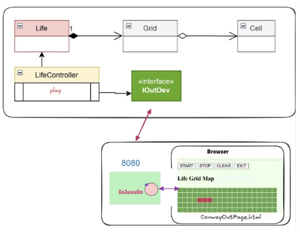
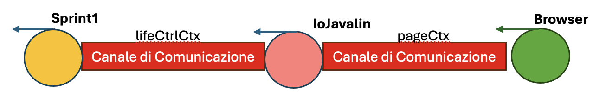

GIT repo: https://github.com/alequaranta/iss2026quaranta
GIT repo: https://github.com/alequaranta/iss2026quaranta
- Realizzare una GUI HTML per il gioco Conway Game of Life. - 1. Chi comanda?. Nel caso di più utenti, questi potranno vedere la stessa griglia o ognuno vedrà la sua griglia? • il committente precisa che tutti gli utenti potranno vedere la evoluzione della stessa griglia, ma solo uno potrà inviare comandi di gestione del gioco. Questo utente privilegiato (detto owner) sarà l’utente che ha aperto per primo la pagina HTML. 2. Chi crea la GUI? Si modifica il Progetto ConwayLife26 o è meglio lasciare il più possibile inalterato questo software già testato? • meglio modificare meno possibile ciò che già funziona. Il Progetto ConwayLife26 è stato impostato in modo da essere estendibile senza dover modificare la logica del gioco. In particolare, la parte di output della GUI potrebbe essere aggiornata introducendo una nuova classe che implementa la IOutDev interface in modo da visualizzare lo stato delle celle nella pagina HTML. • vi sono framework che permettono di realizzare pagine HTML che interagiscono con un server senza dover modificare il software già realizzato in Java. 3. Come si aggiorna? La pagina HTML deve essere aggiornata in modo automatico o l’utente deve premere un pulsante per vedere lo stato delle celle? • la pagina HTML deve essere aggiornata in modo automatico (per tutti gli utenti connessi) durante la evoluzione del gioco, senza che un utente debba fare nulla. Questo richiede l’uso di WebSocket che per- mettono di inviare messaggi dal server alla pagina HTML.
- Preproduzioni
Svilupperemo lo Sprint 3 richiesto dal commitente.
E' stato eseguito il deploy, sotto forma di libreria .jar, dell'architettura sviluppata nello Sprint 1.
Sarà il nostro punto di partenza.
- Architettura del sistema
Scegliamo un architettura che vede il Server, nel nostro caso Javalin, esterno all'applicazione.
L'interazione al servzio avverà, come chiesto dal committente, tramite tecnologia Web Socket sulla porta 8080.
- Vincoli tra le pagine
Tutti gli utenti connettendosi potranno vedere l'evoluzione della stessa partita.
Solo l'utente considerato owner potrà impartire comandi all'applicazione.
Specifichiamo fin da subito che sarà necessario salvare le connesione degli utenti sul Server:
private WsMessageContext lifeCtrlCtx;
private WsContext ownerCtx = null;
protected Vector<WsContext> allConns = new Vector<>();

- Architettura ed enti attivi L'architettura scelta implica la presenza di minimo tre enti attivi: - L'applicativo di gioco (basato su quanto realizzato nello Sprint1) - Il Server Javalin (IoJavalin) - La Pagina Web collegata via Browser e di conseguenza minimo due canali di comunicazione (lifeCtrlCtx, pageCtx).
- Messagggi Gli enti attivi comunicarenno attreverso il contratto imposto sui messaggi da IApplMessag (unibo.basicomm23.interfaces.IApplMessage). Un IApplMessag sotto forma di stringa appare come segue:msg( MSGID, MSGTYPE, SENDER, RECEIVER, CONTENT, SEQNUM )I payload riconosciuti dal nostro sistema sono i seguenti:{ canvasready, //la pagina web vuole registrare la propria connesione BROWSER -> SERVER start, //cmd BROWSER -> CONTROLLER stop, //cmd clear, //cmd exit, //cmd cell(x, y) //dispatch cambio stato cella BROWSER -> CONTROLLER cell(x, y, v) //dispatch cambio stato cella CONTROLLER -> BROWSER ID: name //assegnazione id a pagina web (vedi sotto) SERVER -> BROWSER [[...]] //matrice di rappresentazione griglia (vedi sotto) CONTROLLER -> BROWSER }Per chiarezza comunicativa e sulla base della sintassi IApplMessage diamo un nome a ciascuno degli enti attivi: - Server Javalin: guiserver - Applicazione: lifectrl - Pagina Web x: callerx (assegnato dal server) Il Server comunica alla Pagina Web il proprio nome:ID: name- Nuova pagina HTML La pagina HTML restituita all'utente sfrtutterà <canvas> di HTML5 che definisce un'area di disegno facilmente modificabile tramite Javascript. Quando il server manda un messaggio che contiene “[[…” sta inviando una matrice di booleani che identica lo stato della griglia di gioco. La sintassi JSON esprime una semantica chiara e coincisa ai fini del gioco. Ad esempio, una matrice 5x5 apparirebbe come: [ [true, false, false, false, true], [false, true, false, true, false], [false, false, true, false, false], [false, true, false, true, false], [true, false, false, false, true] ] true: cella viva, false: cella morta NOTA: Dati i payload riconosciuti rimane possibile un'implementazione stile Sprint 3 versione "integrata" - Analisi della comunicazione 1) Da Browser a Server i messaggi dovranno assumere la forma di IApplMessage. Questa volta la rappresentazione è ancora più essenziale! Ci permette di capire chi ha inviato il messaggio e chi lo deve ricevere, indipendentemente dal fatto che i componenti siano connessi o meno. I messaggi inviati sono fire-and-forget: dispatch. 2) Dal Server alla pagina Browser i comandi andranno espressi come semplici stringhe, sarà il codice Javascript a gestirli. I comandi vanno inoltrati a tutte le pagine connesse. 3) L’interazione Applicativo e Server va analizzata da più punti di vista. > L’implementazione di IOutDev deve implementare anche IObserver. Sftutteremo un concetto di interconnesione di alto livello sviluppato da noi: unibo.basicomm23.interfaces.Interaction. L'entità creerà una connesione Web Socket al Server (specifica di Interaction):private Interaction conn ; conn = WsConnection.create("localhost:8080", "eval", this);La connesione stessa è configurata come oggetto Observable (ragion per cui implementiamo IObserver di unibo.basicomm23.interfaces.IObserver;) in maniera tale da poter "osservare" e gestire i messaggi sulla socket.public class OutInGuiInteraction implements IOutDev, IObserver{> Lato Applicativo devo anche comunicare al Server “Ehi io sono il controller e questo è il mio ctx!” in maniera tale che il Server sappia a chi inoltrare i messaggi ricevuti da Browser:protected void connectToServer() { if( conn == null ) try { conn = WsConnection.create("localhost:8080", "eval",this); IApplMessage cmdmsg = CommUtils.buildDispatch("lifectrl", "setcontroller", "set", "guiserver" ); conn.forward(cmdmsg); } catch (Exception e) { e.printStackTrace(); } }> Lato Server un IApplMessage con MSGID = "setcontroller" viene riconosiuto
- SERVER File statici e Script I file statici erogati dal Server seguono quanto detto nell'analisi "Nuova pagina HTML". Il file HTML predispone un canvas HTML5 sul quale sarà disegnata la griglia di gioco. Un apposito script (wscanvascontrol.js) si occuperà di: - creare una connesione Web Socket - inviare comandi al controller - ricevere e visualizzare la griglia di gioco Server Javalin - IoJavalin.java Il Server si occupa dell'erogazione dei file statici e relativi script, di creare gli endpoint per le richieste http e Web Socket. I passi essenziali della gestione della socket sono i seguenti: - OnConnect: Usiamo un vettore di connessioni WS per salvare tutti gli utenti connessi e per determinare l’owner della partita. - OnMessage: Sviluppiamo le seguenti casistiche... A) App -> Server: L’applicativo invia la griglia di gioco sotto forma di matrice canvas agli utenti connessi. B) Pagina -> Server: La pagina web comunica “canvasready” ed il server memorizza la connessione C) App -> Server: L’applicativo comunica di essersi connesso, MSGID “setcontroller”, ed il server memorizza la connessione del controller D) Pagina -> App: Una pagina invia un comando verso il controller - OnClose: Al momento della disconnessione, se necessario, assegnammo un nuovo owner della partita. - APPLICATIVO Implementazione di IoutDev - OutInGuiInteraction.java Come già discusso, la nuova implementazione di IOutDev (che implementera anche IObserver) supporta la visione di “mondo” sviluppata da noi: - Crea una interconnessione con il Server - Se devo inviare messaggi sulla socket -> il controller sfrutta i metodi di IOutDev - Se devo ricevere messaggi sulla socket -> devo sfruttare la proprietà Observable dell’interconnessione WS e (precedentemente) iniettare nella classe il controller in maniera tale da fargli poter eseguire comandi. Main Thread Applicativo - LifeGameInteraction.java Set up ed iniezione del controller nell’implementazione di IOutDev.
- Build dell'immagine e distribuzione tramite Docker
GIT repo: https://github.com/alequaranta/iss2026quaranta